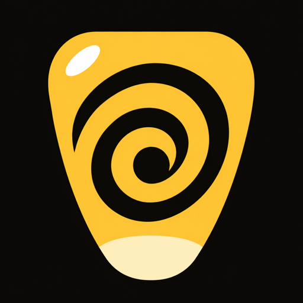
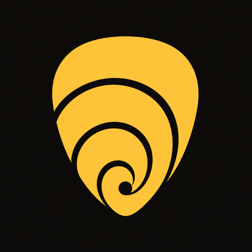
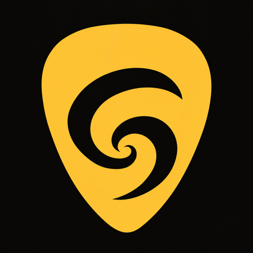
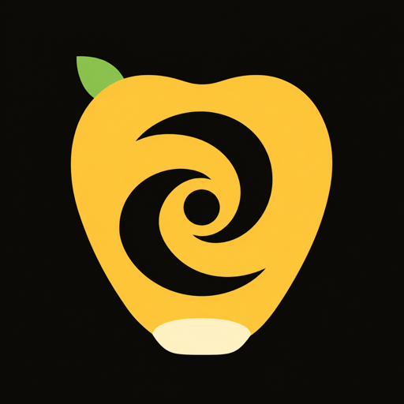
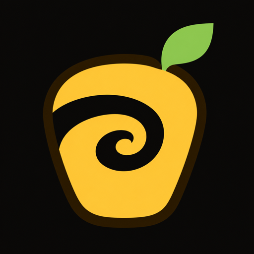

Corn logo concept
The Flush Kernel
One fat corn kernel instead of a whole realistic cob, with a drain swirl cut right through it. The kernel says "corn", the vortex says "Flush", so the icon is also a one-glance explainer for the Flush Button.
It is flat yellow on near-black with a cheeky shine and a cream tip, so it reads as cartoon corn rather than food photography, and the swirl still holds up at launcher size.
1The mark

2Android app icon
Dark wallpaper
Light wallpaper
3On a home screen
9:415G ▲ 87%
9:41
Thursday, 5 November
Clock
Notes
Calendar
Files
Settings
Corn
Camera
Messages
4Small sizes
At 48px the outer swirl band and the drain dot still read; the shine and cream tip become simple accents.
5Lockup
corn
corn
6Alternates



